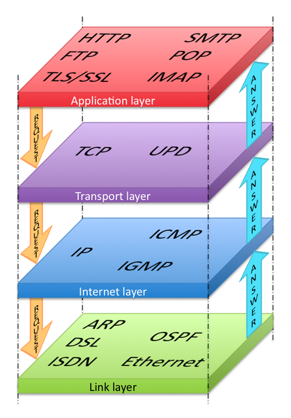

Datakommunikation och webbadresser
Protokoll
- HyperText Transfer Protocol (HTTP)
- HyperText skulle kunna liknas med hypersnabb text på en webbsida, snabb eftersom det är snabbare än på papper. För att en användare, på exempelvis sin dator, ska kunna se den här snabba texten måste den först hämtas från en serverdator, även kallad HTTP-server. Användarens dator skickar ett HTTP-protokoll till servern som då vet att det är hypertext det är frågan om, letar upp texten och skickar sedan tillbaka webbsidan till användarens dator så att sidan går att läsa.
- Transmission Control Protocol (TCP)
- TCP-protokollet är väldigt vanligt för att förflytta information över nätet på ett säkert sätt. Protokollet gör om informationen till mindre datapaket som får sprida ut sig genom routrar för att sedan när alla paket kommit fram sätta ihop informationen igen.
- Internet Protocol (IP)
- IP är ett protokoll som är anknutet till varje dator, mobil eller en annan enhet som går att koppla till internet. De har alla en helt unik så kallad IP-adress som består av siffror och punkter, det är ungefär som datorns egna "telefonnummer". DNS servrar kan sedan översätta IP-adressen till ett domännamn som gör det lättare att hitta till för människor.
URL
"http://medieteknik.lnu.se/1me321/uppg/u1.html#fragor"
Den här URL:en börjar med att hänvisa till HTTP-protokollet genom att det står "http://". Eftersom .se är en toppdomän så innebär det att delen "lnu.se" är namnet på huvuddomänen på sidan. Det finns även en subdomän i det här fallet och det är den som heter medieteknik. Snedstrecken visar sedan vilken mapp-väg sidan ligger på. Sidan är alltså i mappen "uppg" som ligger i mappen "1me321" som sedan ligger i sidans huvudmapp. Sidan filen hänvisar till är html-filen "u1". Hashtagen refererar till ett html-element i sidan som har fått id:t "fragor". Besöker man webbsidan så kommer webbläsaren automatiskt att skrolla ner till det elementet.